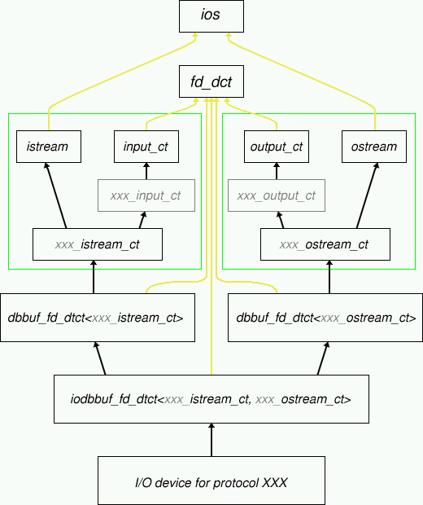

Classes derived from input_ct and input_link_ct describe
input characteristics while output_ct and output_link_ct describe
output characteristics.
3.1.2 The relationship with device objects
3.1.2.1 Template parameters
A device is an entity that has a single file descriptor.
Libcw by default provides definitions for files, sockets and pipes.
Device classes are defined as template classes with one or two template parameters.
Read only and write only devices use a single template parameter, while IO devices use two template parameters:
one for the input characteristics and one for the output characteristics.
3.1.2.2 Input or output device
The template parameters that need to be passed to the device classes are the traits classes, or classes derived from those.
The type of the traits class determines whether a device is read-only or write-only.
When two template parameters are needed then exactly one input traits class and one output traits class must be passed.
3.1.2.3 Inheritance
The template parameters and thus the traits classes, are used as a base class of
the device objects, using multiple inheritance in the case of IO devices with two template parameters
(see figure 1).

Figure 1. Class hierarchy of an IO device decoding a protocol XXX.
The light gray text represents user defined parts using inheritance.
The green boxes contain the input and output traits classes.
Virtual base classes are represented with yellow lines.
The objects input_ct
and output_ct each contain a pointer to respectively the input buffer and the output buffer.
The libcw kernel class fd_dct calls virtual functions for IO events.
3.1.2.4 Summary
This pointer must be passed to the constructor of the traits class and must be allocated with new.
De-allocation is taken care of by the buffer itself.
[ The constructor of the traits base class takes care of calling respectively
dbstreambuf::set_input_device()
or
dbstreambuf::set_output_device(),
while the destructor of the traits class takes care of calling
dbstreambuf::release();
this causes the automagic deletion of the buffer when its last device is destructed. ]
While ibuffer (obuffer) is protected, it is possible to get a copy
of the buffer pointer by means of the public method rddbbuf().
3.1.3.2 Type definitions
In order to allow more general templates to be written, the traits classes contain two typedefs
that are related with the buffers, see table 2.
3.1.4 The relationship with the libcw kernel
3.1.4.1 Virtual functions
The traits classes are derived from the virtual base
class fd_dct, see figure 1.
An IO event on the file descriptor of a device causes a virtual function of fd_dct to be called.
The traits classes catch these IO events by overriding these virtual functions.
The two virtual functions that are declared by fd_dct are described below.
virtual void read_from_fd(void)
Overridden by classes derived from input_ct and input_link_ct.
Data should be read from file descriptor fd() and written to the buffer pointed to
by ibuffer.
This method should call reset_need_read() when no more reading is needed or wanted
(for instance when the buffer is too full).
This method should call reduce_buf_if_empty()
to make sure that the buffer reduces its size.
Write access to the buffer is provided through the dev2buf_
methods of ibuffer.
virtual void write_to_fd(void)
Overridden by classes derived from output_ct and output_link_ct.
Data should be read from the buffer pointed to by obuffer and written
to file descriptor fd().
This method should call reset_need_write() when no more writing is currently possible or
needed (for instance, when the buffer is empty).
Read access to the buffer is provided through the buf2dev_
methods of obuffer.
3.1.4.2 Summary
3.1.5 The relationship with the application
3.1.5.1 Input events
An application based on libcw is event driven.
Input events (like receiving new data on a socket) happen more
frequently than other events in networking applications,
therefore being the most important events of the application.
However, input events do not use the
events interface
of libcw; this general events interface
is intended for event servers with an arbitrary number of clients
while data received on an input device needs to go to a single object
at most: the decoder.
It would be a waste of resources to use the general events
interface for the most important event, while it has only
such a simple demand.
The approach used in libcw is to use a complete new type
(class) per device/protocol combination.
Catching input events is done by overriding the virtual method
read_from_fd().
Extra support is added for so called «message blocks».
A message block is a contiguous part of a data stream:
data received over a stream can be cut into pieces (messages) and presented to the user
per message rather than per data-block as read with the read(2) system call.
For those protocols that this doesn't make sense (although I can't think of any) the device/protocol class should
simply override read_from_fd()
and process the raw data when it arrives.
Otherwise, the existing read_from_fd() of the abstract class
read_input_ct defined by
libcw can be used.
3.1.5.2 Standard Traits base classes
Libcw comes with a few more specialized traits classes that can be
used as base class for protocol decoder and encoder classes.
3.1.5.2.1 class read_input_ct
This class declares four virtual functions.
virtual int new_dreceived(char const* new_data, size_t len)
This pure virtual function is called when len bytes of new data
is read with a successful read(2) system call (so always len > 0).
When the received data contains or completes a new message, the number of bytes that belong to this next message should be returned.
If no complete message is received yet then zero must be returned.
For example, consider a binary protocol that starts
with an integer of 2 bytes which represents the total length of the message
(including those two bytes), then new_dreceived could
be implemented as follows.
class my_binary_protocol : public read_input_ct {
private:
uint16_t remaining_bytes;
uint16_t const one_byte_magic = 0xffff; // `remaining_bytes' is set to this
// value when only one byte of the
// length was received so far.
union {
uint16_t remaining_bytes_network_order;
char first_two_bytes[2];
};
protected:
my_binary_protocol(input_buffer_ct* ibuf) : read_input_ct(ibuf), remaining_bytes(0) { }
virtual int new_dreceived(char const* new_data, size_t len);
};
int my_binary_protocol::new_dreceived(char const* new_data, size_t len);
{
register uint16_t remaining_bytes_cache = remaining_bytes;
if (remaining_bytes_cache == 0) // Start of new message?
{
if (len > 1) // Got complete length?
remaining_bytes_cache = ntohs((uint16_t*)new_data);
else // Only got first byte of length
{
first_two_bytes[0] = *new_data; // `len' is always > 0
remaining_bytes = one_byte_magic; // Set flag: we only got one length byte
return 0;
}
}
else
remaining_bytes = 0; // Anticipate that the next test is true
if (len >= remaining_bytes_cache) // Complete message?
return remaining_bytes_cache;
if (remaining_bytes_cache == one_byte_magic) // Already got first byte previous call?
{
first_two_bytes[1] = *new_data;
remaining_bytes_cache = ntohs(remaining_bytes_network_order) - 1;
}
remaining_bytes = remaining_bytes_cache - len;
return 0;
}
This code was optimized so it can be used in a real life application as well.
The optimized path assumes that received packets are either much larger than the message sizes and/or that an integer number
of messages fit exactly in the received packets.
This means that by far most calls will be done with remaining_bytes == 0
and len larger or equal the size of the next
message.
virtual void decode(msg_block_ct msg)
This pure virtual function is called when a new message has been received.
Possible actions are for instance queueing (possibly using a decoded priority),
throttling (disabling the device for a given period of time),
using the function as an event generator
and/or requesting timer events in order to trigger other actions.
In other words treat this call as an event, because that is what it is.
virtual void read_returned_zero(void)
This virtual function is called when read(2) returned 0.
The meaning depends on the exact device , but in general it means that no more data will be received
from this device: it can be closed and removed by calling the member
function fd_dct::del().
virtual void read_error(int err)
This virtual function is called when read(2) returned a fatal error.
The error is passed as err.
The default calls fd_dct::del().
3.1.5.2.2 class write_output_ct
This class declares one virtual function.
virtual void write_error(int err)
This virtual function is called when write(2) returned a fatal error.
The error is passed as err.
The default calls fd_dct::close().
Copyright © 1999 Carlo Wood. All rights reserved.